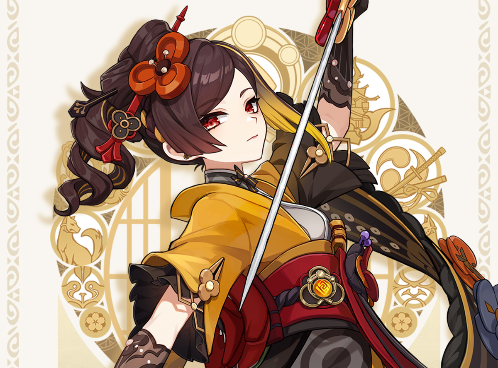

Confira a Notícia:
A HoYoverse divulgou as informações completas de Chiori, nova personagem cinco estrelas de Genshin Impact. A Costureira Trovejante chega em 13 de março ao game, como grande destaque da versão 4.5.
Segundo o estúdio chinês, a espadachim será especializada no elemento Geo. Ela poderá invocar o autômato Tamoto para causar dano baseado nos atributos ATQ e DEF, e terá a oportunidade de criar uma segunda criatura caso esteja perto de alguma Construção Geo.
Enquanto isso, a habilidade suprema de Chiori utiliza dano cortante do emento Geo em AdE. Dependendo da ação executada, a heroína poderá aumentar em 10% a velocidade de aliados (caso estejam usando um Vestuário ou Planador), iniciar ataques coordenados com o Tamoto ou gerar encantamentos. Chiori e Arataki Itto serão os banners de destaque na primeira metade da atualização. A segunda metade da versão 4.5 terá os personagens Neuvillette e Kaedehara Kazuha.
Um infográfico divulgado pela HoYoverse no início deste ano revelou que a empresa está arrecadando milhões de dólares com banners. Entre eles, os limitados de Xianyun e Nahida chamaram a atenção por serem bastante popular, ao renderem cerca de US$ 25 milhões juntos.